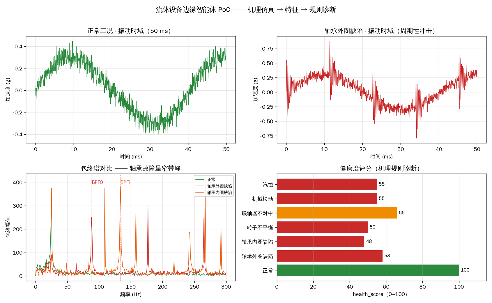

面向泵、风机、压缩机等流体机械的工业边缘智能配套：一台跑在设备现场的边缘计算盒子，
本地完成振动 / 电流 / 温度多信号采集与 AI 推理，实现健康度监测、故障预警、能效分析、自然语言问答。
不是通用边缘平台，也不是节能计算器——把「设备机理 + 边缘推理 + 智能体编排」三层串成可跑通的链路。
更关键的是：它不止于监测——把能耗显示与节能确权接成闭环，让“省了多少”变成能上桌分成的数据。
电厂、矿山、化工、市政里，泵 / 风机 / 压缩机是能耗与停机的重灾区。我们从「设备侧」而不是「云侧」下手。
振动 / 电流 / 温度多信号融合，输出健康度评分 + 故障类型预警，提前发现轴承、不平衡、不对中、松动等隐患。
工况识别 + 能效趋势分析，为节能改造提供数据底座，让「改不改、改多少」有实测依据。
设备侧边缘盒子本地推理，断网可用，现场自然语言问答，把老师傅经验变成 7×24 在线的「设备医生」。
整机从「卖设备」升级为「卖设备 + 智能服务」，形成差异化卖点与后续服务收入。
减少非计划停机、降低能耗、售后诊断提速，现场数据本地处理、合规不出场。
壁垒：设备机理 + 真实失效数据 + 边缘推理——做「设备专用」，不做通用平台。
市面上的「状态监测工业智能体」已经很多，但大多止步于报警与健康度。 真正稀缺的，是把能耗和节能确权接成一条闭环——这，就是我们的差异化。
振动 / 电流 / 温度多信号 → 健康度评分、故障类型、剩余寿命。别人有的，我们也有，是能力基石。
稳态实际功耗、能效趋势、与基线逐时对比。我们的老本行，算法与「节能测算平台」同口径。
基线管理 + 工况归一 + 节能量核算 + 可审计证据链。为 EMC 分成、碳核算、节能审计提供“说得清”的数据。
把设备健康和节能量，都变成能上桌分成的数据。
每一层职责清晰，边界可审计。诊断模型与智能体分层，谁也不越权。
仓库内置旋转机械机理仿真，直接生成 7 类典型工况的振动信号并走完整条诊断链路——开箱即跑、可复现。
$ pip install -r requirements.txt
$ python3 demo/run_demo.py
仿真工况 诊断结论 健康度 风险 命中
正常 正常 100 normal ✅
轴承外圈缺陷 轴承外圈缺陷 58 high ✅
轴承内圈缺陷 轴承内圈缺陷 48 high ✅
转子不平衡 转子不平衡 50 high ✅
联轴器不对中 联轴器不对中 66 medium ✅
机械松动 机械松动 55 high ✅
汽蚀 汽蚀 55 high ✅
→ 命中率 7/7
设备进入稳态运行后，边缘盒子按秒级采集电流 / 母线电压 / 转速，实时折算实际输入功率（实际功耗）， 并与额定、基线、历史工况对比。拖动下方参数即可实时联动演示。
⚠️ 演示数据：参数为示意值，算法与「节能测算平台」一致（轴功率法，已含电机效率 95% 折算为输入功率）； 现场实际功耗须以电表 / 采集器实测标定为准。
每一个取舍，都是被现场条件逼出来的。
现场真实失效样本稀缺（复现故障要停机），深度模型冷启动没数据；先用可解释规则 + 无监督检测顶上。
轴承缺陷呈窄带包络（峰极突出），汽蚀呈宽带（峰不突出）——只看总能量会把这俩混淆。
边缘盒子上无重型依赖，特征维度 <20，便于后续 INT8 量化上 NPU。
零数据依赖、开箱即跑、可复现；同时体现「设备机理」这一壁垒。